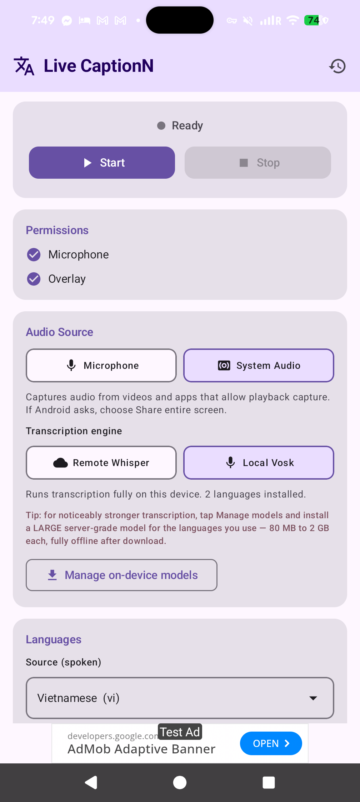
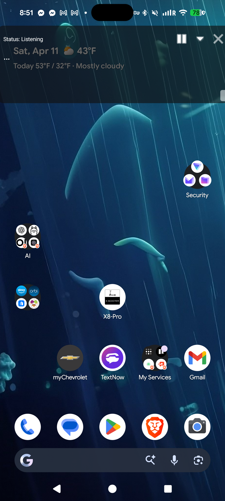
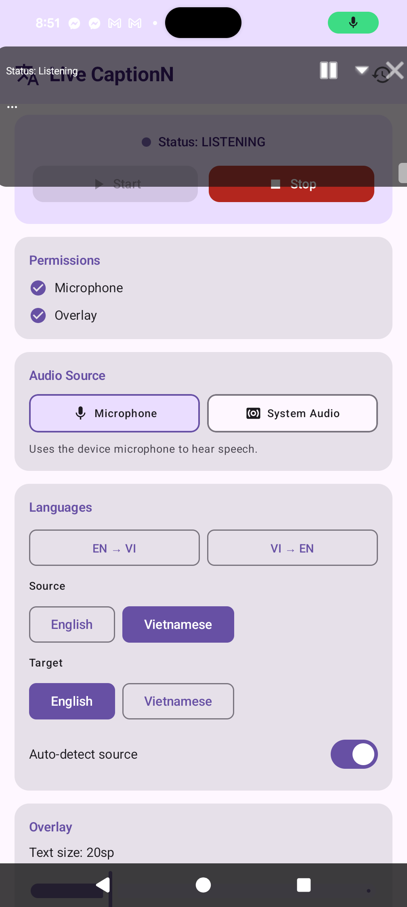
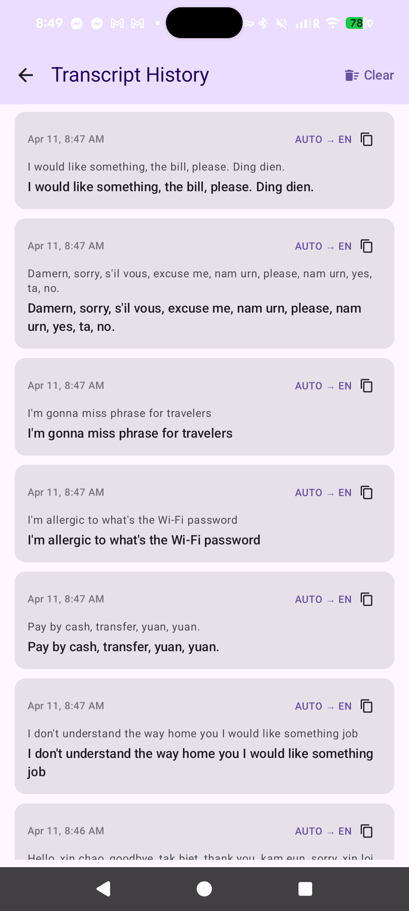

LiveCaptionN streams speech recognition on-device — word by word, as you speak — from your microphone or the audio another app is playing, then translates on-device with Google ML Kit (or a LibreTranslate server if you prefer), all inside a floating overlay you can drag anywhere on screen. 100% offline after first run.


Purpose-built for watching foreign-language videos, following meetings, and making the screen more accessible — without handing your audio to a cloud service.
Caption whatever the mic hears, or capture audio from video apps using Android's MediaProjection API — no root required.
One long-lived Vosk recognizer is fed ~100 ms audio chunks continuously, so words appear as you speak them — no 2-second batch delay, no cloud round-trip. Works the same for mic and system audio.
Google ML Kit's pre-trained Translate models run entirely on the phone. ~59 languages, ~30 MB per pair, downloaded once and cached offline forever. LibreTranslate is still available in settings as an alternative backend if you want even broader language coverage.
Draggable, resizable, always-on-top captions with adjustable text size, opacity, and pause/minimize controls.
Every caption is saved to a local transcript log you can revisit, copy, or clear — persisted in a JSON file on-device.
No analytics, no ads, no cloud lock-in. Run it against your own self-hosted servers or stay fully offline with Vosk.
A background WorkManager job polls the GitHub Releases API twice a day. When a new build ships, you get a system notification with a one-tap Download action — and an in-app banner the next time you open the app.
LiveCaptionN is a two-stage pipeline: speech → text runs in a speech engine, then text → text runs in a translation engine. Both stages default to fully on-device so the app works without any servers, but each stage can be switched to a remote backend independently.
Pick Local Vosk and the source-language picker collapses to just the models installed on this phone. Two small models ship inside the APK (English and Vietnamese) so it works out of the box with zero downloads.
Tap Manage on-device models to grab more. The sheet offers two quality tiers for every supported language:
Supported languages include English, Vietnamese, Spanish, French, German, Italian, Portuguese, Dutch, Russian, Ukrainian, Polish, Czech, Turkish, Arabic, Persian, Hindi, Chinese, Japanese, Korean, and Indonesian. Models are fetched from alphacephei.com/vosk/models over HTTPS and unzipped to app-private storage.
By default LiveCaptionN uses Google ML Kit's pre-trained Translate models, which run entirely on this device. ~59 supported languages, ~30 MB per language pair (downloaded the first time you use the pair, then cached offline forever). No server, no account, no telemetry.
If you want more languages or you already run your own infrastructure, switch to the LibreTranslate backend in settings and point the app at any LibreTranslate-compatible server. On URL change the app calls GET /languages and repopulates the pickers with whatever packages the server has.
Want to add more LibreTranslate languages? SSH into the host and install extra Argos packages:
argospm update
argospm install translate-en_ja translate-en_ko translate-en_fa
# …then restart LibreTranslateIf the source and target language match (English speech → English captions), no translation call is made regardless of backend.
Built with Jetpack Compose for the settings screen and native Android Views for the floating overlay — so it stays fast and always on top.


Sideload the APK from the latest GitHub release, then allow microphone access and the Display over other apps permission.
Choose mic or system audio. Both stages of the pipeline default to fully on-device — streaming Vosk for transcription, Google ML Kit for translation — so it works offline out of the box. Swap in LibreTranslate or Whisper any time from settings.
The overlay floats on top of whatever you open next — YouTube, TikTok, meetings, games — and captions in near real time.
Kotlin, coroutines, Jetpack Compose, and a lightweight manual DI container — no Hilt, no code generation.
Yes. It's fully open source under an MIT-compatible license, has no ads, collects no analytics, and every release APK is built by GitHub Actions from a public commit you can inspect.
Android 10 (API 29) and above. Some features like createConfigForDefaultDisplay() for MediaProjection are used on Android 14+ where available.
No. The default pipeline is fully on-device: streaming Vosk handles speech-to-text and Google ML Kit handles translation. You only need a server if you want Whisper-based STT or LibreTranslate's wider language coverage — both are optional backends you can enable in settings.
Translation runs on-device by default via Google ML Kit — ~59 languages, roughly a one-time ~30 MB download per language pair, then cached forever. Prefer a server? Switch to LibreTranslate in settings and the app will fetch GET /languages from your endpoint and populate the pickers from whichever Argos Translate packages you have installed.
For on-device speech recognition, tap Manage on-device models inside the app to download additional Vosk models — both Small (~30–80 MB) and Large server-grade (80 MB to 2 GB, lowest error rate) variants for Spanish, French, German, Russian, Chinese, Japanese, Arabic, Hindi, and more. For translation, ML Kit already covers ~59 languages out of the box; if you need something it doesn't, switch to LibreTranslate and argospm install extra packages on your server.
Not for captioning. Once you've downloaded a Vosk model and the ML Kit translation pair you want, speech recognition and translation both run entirely on-device. Internet is only needed for the one-time model downloads and for optional backends (Whisper ASR, LibreTranslate) if you choose to use them.
Yes, via the system-audio mode that uses Android's MediaProjection + AudioPlaybackCapture. Note: Android only allows capturing audio from apps that permit playback capture, so some DRM-protected streams will not be captured.
Locally, in a JSON file inside the app's private storage. Nothing leaves the device except the speech sent to your ASR and translation endpoints.
Fully-automated GitHub Actions builds publish a new release on every commit to main. One-click install, no Play Store needed.
Get the latest release